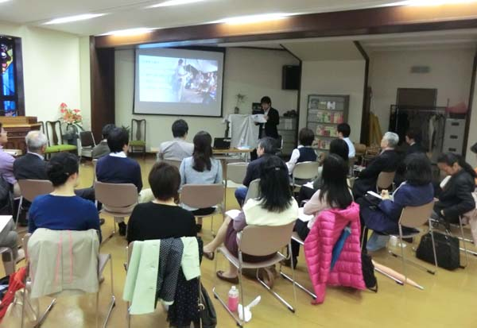

この度、OCHAは中央緊急対応基金(CERF: The Central Emergency Relief Fund)の2012年度年次報告書を発行しました。これまで世界87カ国向けに30億ドル近くを提供してきたCERF。その成果と課題を紹介したOCHA本部ウェブストーリーの和訳を作成しました。
--------------------
1934年、カトマンズ渓谷の下を走る断層線が大きく動き、マグニチュード8.4の地震が発生しました。この地震により、8万戸以上が倒壊、8,500人がいのちを失いました。以来80年、カトマンズとその周辺の渓谷では地震が発生していませんが、国連機関とネパール政府は想定される次の地震に対し備えをより強化するよう決意をあらたにしています。
今年4月、ネパール及び海外の防災専門家がヒマラヤ州で一堂に会し、次に地震が起こった場合に生じる人道面での影響を想定。またこれへの対応を検討しました。
朝鮮民主主義人民共和国(北朝鮮)で活動している人道支援機関は、資金不足が原因で、一般市民や地域社会が直面する緊急支援ニーズに十分応えられなくなってきていると警鐘を鳴らしています。世界でももっとも長期化している人道危機のひとつとして北朝鮮が数えられますが、国連やそのパートナー機関に対するドナーによる支援はここ10年で劇的に減少しています。
人道支援機関は北朝鮮での人道支援について、政治や安全保障上の思惑とは無関係に、そして人道ニーズに基いて提供されるべきであると一貫して主張してきました。しかしこのままでは、国際的な支援の手が届かない何百万人もの人々が困窮することとなります。
ソマリアで国連人道機関やNGOから構成される人道カントリーチームを率いているフィリップ・ラザリニ氏のインタビューのビデオに日本語字幕をつけました。2011年にソマリアを襲った飢饉を振り返り、二度と悲劇を繰り返さないよう、コミュニティへの投資を通じた「レジリアンス・アプローチ」の必要性を訴えています。
自然災害や紛争、気候変動などの脅威に対して、「人間の安全保障」というアプローチを適用することの大切さをお伝えするビデオに日本語字幕をつけました。具体例として、「国連人間の安全保障基金」を活用した北ウガンダでのプロジェクトも紹介しています。
「人間の安全保障」や「国連人間の安全保障基金」についての詳細は、OCHA本部のウェブサイトをご参照下さい。
日本語字幕付ビデオの一覧>>
【2013年5月9日、アカバ発 IRINジョン・ジェームズ記者】 国連国際防災戦略事務局(UNISDR)のエリザベス・ロングワース局長は、ヨルダンのアカバで開催された災害リスク削減(DRR: Disaster Risk Reduction)に関する会議で、起こりうる災害に対する備えに投資することは「そんなに難しいことではない」と述べています。
2013年4月24日、OCHAはジャパン・プラットフォーム(JPF)さんとのパートナーシップで、「国際人道支援活動の調整」をテーマにワークショップを実施しました。東京にあるADRAジャパンさんの事務所にて開催されたこのワークショップには、計20名ほどのJPFメンバー団体及びJPF事務局スタッフの方々が参加してくださいました。OCHA神戸事務所長の渡部が国際人道支援の調整メカニズムやツール・サービスなどを説明した後、海外の緊急人道支援の現場でこのような国際的な枠組みに参加するメリットや課題などについて、参加者による活発なグループ討論と発表が行われました。
今後もJPFメンバー団体およびJPF事務局との緊密な協力関係と対話を通じて、このような活動を順次展開していく予定です。


 朝鮮民主主義人民共和国(北朝鮮)で活動している人道支援機関は、資金不足が原因で、一般市民や地域社会が直面する緊急支援ニーズに十分応えられなくなってきていると警鐘を鳴らしています。世界でももっとも長期化している人道危機のひとつとして北朝鮮が数えられますが、国連やそのパートナー機関に対するドナーによる支援はここ10年で劇的に減少しています。
朝鮮民主主義人民共和国(北朝鮮)で活動している人道支援機関は、資金不足が原因で、一般市民や地域社会が直面する緊急支援ニーズに十分応えられなくなってきていると警鐘を鳴らしています。世界でももっとも長期化している人道危機のひとつとして北朝鮮が数えられますが、国連やそのパートナー機関に対するドナーによる支援はここ10年で劇的に減少しています。
")